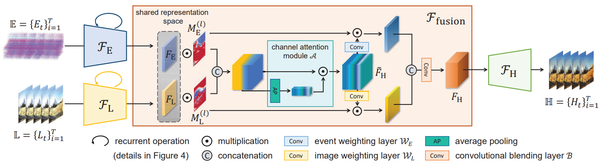

Learning Event Guided High Dynamic Range Video Reconstruction
Learning Event Guided High Dynamic Range Video Reconstruction
Abstract
当使用传统相机捕捉运动场景时，由于帧率和曝光时间无法权衡，基于帧的HDR视频重建效果不够好，事件相机有大动态范围和高时间分辨率，没有上述问题，这是一个LDR到HDR的思路。本文中，我们提出了一个用于事件引导HDR视频重建的多模态学习框架。为了更好地利用两种模态对同一场景的知识，我们提出了一种多模态表示对齐策略（ multimodal representation alignment strategy）来学习共享潜在空间（shared latent space），和一种融合模块（fusion module）来针对不同区域不同动态范围的两种类型信号进行互补。在重构的HDR视频中反复利用时间相关性来抑制闪烁（lickering effects）。提出的HDRev-Net在合成数据和实际数据方面都sota。
Method
3.1. Formulation：
Event generation and stacking. 用voxel grid堆叠
LDR image formation. 从HDR图像退化到LDR图像，HDR图像表示为：，其中表示irradiance照度，表示曝光时间。生成LDR图像有三个步骤：动态范围裁剪（dynamic range clipping）, 带有相机响应函数（camera response function (CRF) ）的色调映射（tone mapping）, 和量化（quantization）:
为了使LDR图像与线性照度域内的事件对齐，首先对LDR图像进行转换：
其中表示逆CRF，为了缓解大范围线性阈值回归的学习困难，对的范围进行压缩：
其中控制压缩量。
3.2. HDRev-Net：
给定堆叠的事件序列，和LDR序列，目标是得到HDR重构序列，网络命名为HDRev-Net，整体结构如下图所示：有两个不同模态的编码器和，用于temporal context encoding和multimodal representation alignment，置信度引导的多模态融合模块以及解码器用于生成HDR视频。pipeline表示为：

Multimodal representation alignment. 两个模态差距很大，由于不同的low-level统计特性和高度非线性关系，要融合是non-trivial的。直接concat或先单目重构的想法是trash的。本文中提出一个encoder-decoder网络进行隐式的学习，学习两个模态的编码器在shared latent space中表示的事件和LDR的特征，然后通过bottleneck layer的融合模块进行融合。一个简单的解决方案是同时训练两个编码器，将潜在表示联合解码得到HDR帧。然而，由于帧与事件之间的模态差距，这样做就意味着联合执行模态内重构（LDR to HDR）和模态间重构（event to HDR），最终导致严重依赖LDR帧，几乎忽略事件。
为了有效地利用事件的高动态范围和高帧率的特性，需要找到一个能够很好地表达事件和LDR帧的相同点和互补信息的共享表示空间，以便后续的多模态融合。为了实现这一目标，我们提出了一种多阶段的方法:首先用事件进行模态间重构，然后从LDR帧进行模态内重构，然后联合训练两个编码器和HDR解码器。
具体来说，预训练事件编码器，将事件映射为latent representation，然后由HDR解码器解码为HDR帧：
然后在固定参数的情况下训练LDR解码器，这样能够更好对LDR帧在潜在空间的表示进行对齐：
这样共享的解码器，事件和LDR帧的表示在共享的潜在空间中对齐，就可以通过所提出的Pipeline进行有效融合。
Confidence guided multimodal fusion.